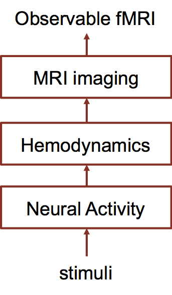
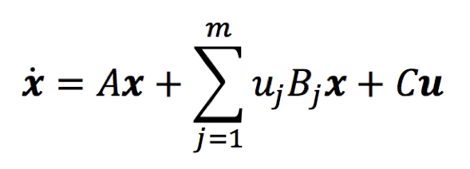
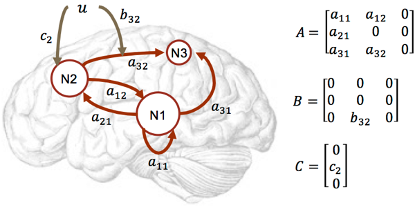
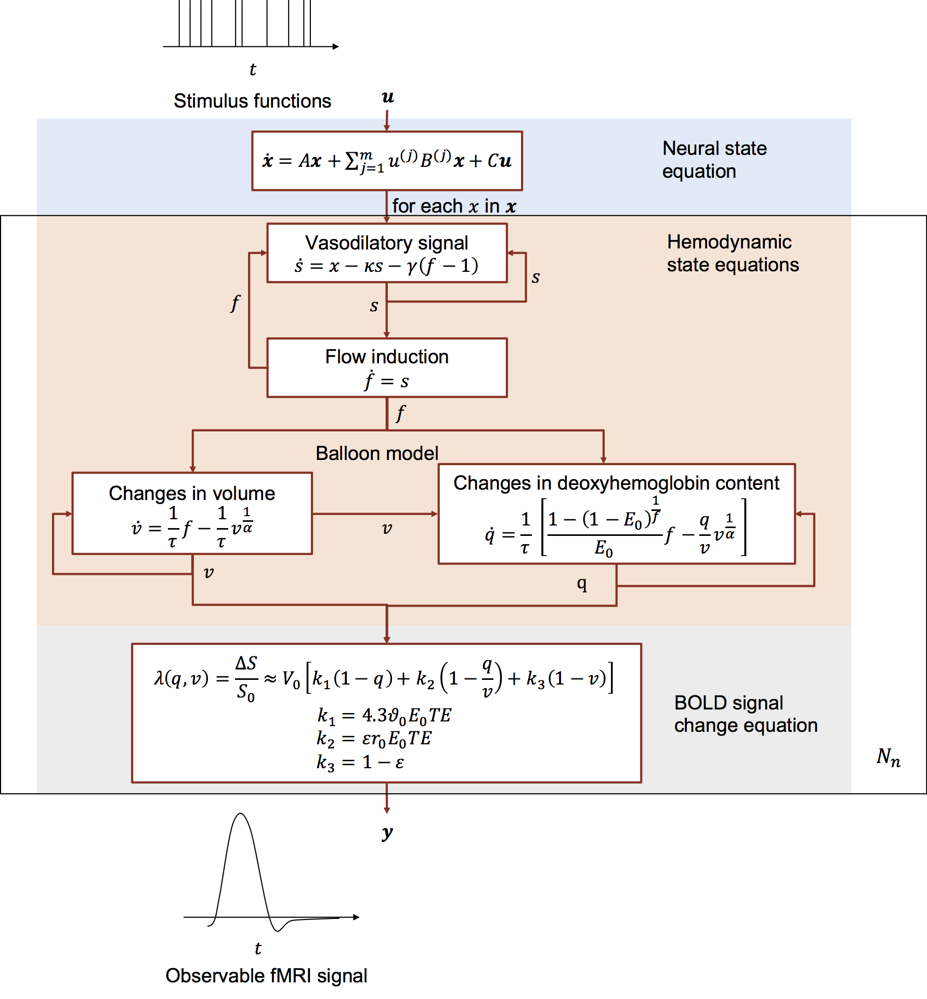
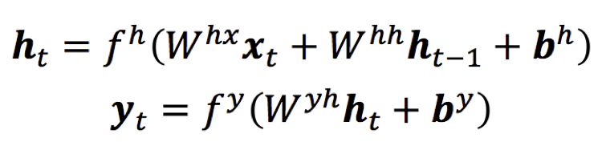
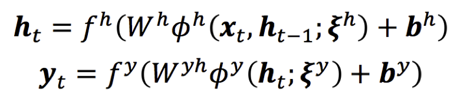
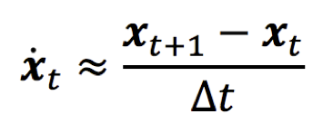
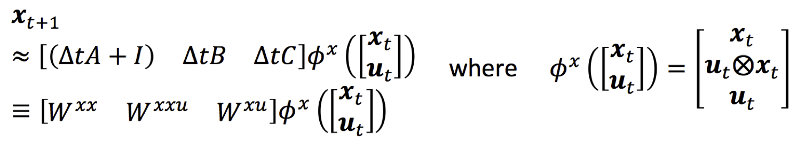
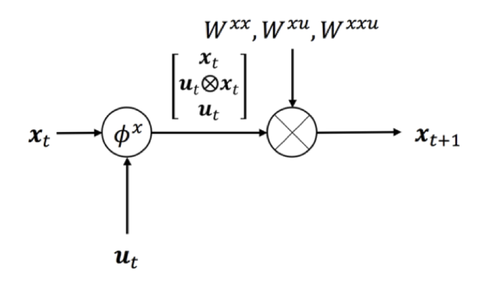
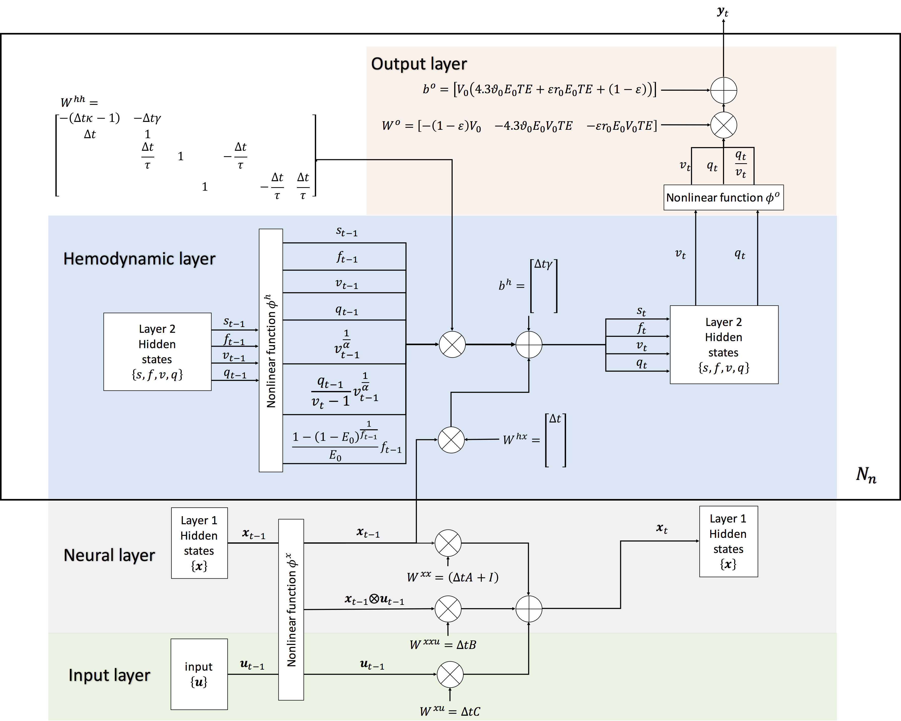

Introduction
Neural Network (NN) is a powerful tool and one can find its exciting successes in various fields recently. In neurology, it can be used to detec lesions, predict treatment outcomes, and assist diagnosis. However, its ability of discovering the working mechanism of the brain remains limited, because none of the generic NNs has a clear biophysical interpretability, although NN is originally inspired by biological studies. In this project, we focus on not only its ability of reproducing observed bio-signals but also it biophysical meaning. Rather than manipulating standard neural net models and then trying to load them with biophysical meaning, we customize neural network from scratch based on the previous most advanced biophysical model, Dynamic Causal Modeling (DCM). We propose a new Generalized Recurrent Neural Network (GRNN) and show that DCM can be cast as a specific case of it. The resulting DCM_RNN links the power/flexibility of NN and the biophysical interpretability of DCM.
Dynamic Causal Modelling
Dynamic Causal Modelling (DCM) is a highly nonlinear generative model used to infer the causal architecture of coupled dynamical systems in the brain from biophysical measurements, such as functional MRI (fMRI) data. The causal architecture indicates how the neural activities interact with each other between distributed brain regions and how input stimuli may alter the pattern. Fig. 1 shows a high level overview of DCM. It is the only one that explicitly models the complete processes from inputs, neural activities, hemodynamics, to MRI imaging, and thus considered to be the most biologically plausible as well as the most technically advanced fMRI modeling method.
Neural activity is an abstract description of the activity (neuron firing) in brain regions, one scalar per region. DCM assumes the neural activities are couple between regions in a bilinear way:
where x is the neural activity. Dot above a variable means its temporal derivative. u is the experimental or exogenous stimulation, taken as the input of DCM. m indicates the number of experimental stimuli. Multiple stimuli, such as visual, acoustic, and tactile, may present in a single experiment. Subscript j means the jth entry in a vector or the th matrix of in a matrix set. A, B, C are parameters to be estimated, loosely referred to as the effective connectivity. Fig. 2 visualizes how the matrices encode the causal architecture in the brain.
Neural activity consumes oxygen and causes changes in blood supply and blood oxygen content. MRI scanner can detect these changes and record them as fMRI images. These are described in the hemodynamic module and MRI imaging module which are highly nonlinear. One overview of DCM with details are shown in Fig. 3.
DCM-RNN
At the first glance, it is hard to see any correspondence between DCM and any generic neural network, such as CNN or LSTM. And it is the case :) However, we propose a generalization of vanilla RNN (GRNN) and made it to cast DCM as a special configuration of GRNN.
A generalization of vanilla RNN
The vanilla RNN models the relationship between its input and its output as
The vanilla RNN is too simple to accommodating the complexity of DCM. We generalize it by adding more nonlinearity:
where the φ's are the extra nonlinear functions added which may be parameterized by ξ's. It greatly extends the flexibility of RNN.
Convert DCM to DCM_RNN
The key idea of the conversion turns out to be very simple. The only tricks are a simple approximation and equation terms rearrangement. The approximation is
where ∆t is the time interval between two adjacent fMRI samples. This approximation is valid as long as ∆t is small. Substitute it into the original equation. One obtains
It can be visualized as a piece of neural network
Similar trick can be applied for other parts of DCM and one can obtain DCM_RNN as shown in Fig. 4.
Advantages of DCM_RNN
DCM_RNN is more than a simple reformatting of DCM. It provides a new form of model inversion of DCM, which tends to be more noise robust than the traditional Variational Bayes. It can be combined with other deep learning neural networks to study brain under complex stimuli.
Publications
- Yuan Wang, Yao Wang, and Yvonne W Lui, Generalized Recurrent Neural Network accommodating Dynamic Causal Modelling for functional MRI analysis, ISMRM, 2017
- Yuan Wang, Yao Wang, and Yvonne W Lui, Dynamic Causal Modelling with neuron firing model in generalized recurrent neural network framework, accepted ISMRM, 2018
- Yuan Wang, Yao Wang, and Yvonne W Lui, Biophysically interpretable recurrent neural network for functional magnetic resonance imaging analysis and sparsity based causal architecture discovery, submitted to EMBC
- Yuan Wang, Yao Wang, and Yvonne W Lui, Generalized Recurrent Neural Network accommodating Dynamic Causal Modelling for functional MRI analysis, submitted to NeuroImage